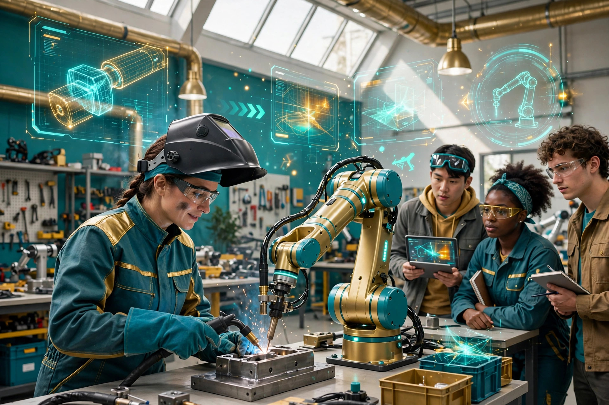

Features · AGI Future Foundation
The Trade Craft Academy
Every industrial revolution has had the same awkward moment: the machines arrive before the people who know how to work beside them. The steam engine needed engineers. The assembly line needed line workers who could read a blueprint and trust a conveyor belt. The robot era will need something stranger and harder — people who can train with machines, teach machines, repair machines, and stand next to machines on a job site without flinching. SmartCiti.X, the tenth series in the Foundation’s intended W3 network, is the plan to build the school for that moment: a Trade Craft Academy where union trades are taught with augmented and virtual reality, where robotics manufacturing happens in the same building as the classroom, and where the training ground itself is a digital twin of a real place on a real map. It is, for now, a plan — detailed, numbered, and gated — and this feature tells it straight, ambition and all.

The gap the Academy is built to close
Walk through any conversation about artificial intelligence and you will hear two stories that never quite meet. One story is about software: models that write, code, reason, and plan, getting cheaper and more capable every few months, living in data centres and on laptops. The other story is about the physical world: the buildings that need wiring, the pipes that need fitting, the warehouses that need stocking, the roads that need repairing, the factories that need staffing. The first story moves at the speed of a software release. The second moves at the speed of a person learning a trade — years of apprenticeship, thousands of hours of supervised practice, a journeyman’s card earned the slow way.
The Academy’s answer starts from a premise that sounds obvious once it is stated and radical once it is taken seriously: the people who build the physical world should be the people who train the machines that will work in it, and the machines should be trained in the same rooms where the people learn. That is what gamified training for robotic and human integration means in practice. It is not a slogan about the future of work. It is a curriculum idea. A trainee learning a trade — electrical work, plumbing, carpentry, welding, machining, the skilled crafts that keep a city standing — would learn it in an environment where a robot is present as a training partner, not as a distant threat. The robot demonstrates, the human practices, the human corrects the robot, the robot repeats. None of this exists yet as a running programme; what exists is the plan and the documents describing it.
There is a second gap the Academy is aimed at, and it is geographic. The skilled trades are not evenly distributed, and neither are the opportunities to learn them. The plan puts the first launch in Louisiana, with Nebraska and Indiana in the later phases — places chosen, in the planning, as launch geography rather than as confirmed sites. No city has been named, no address has been signed, no building has been bought or leased, and this feature will not invent one. What matters about the geography is the shape of the idea: a network that starts in one place and grows outward, with manufacturing, training, and housing considered together rather than as three separate businesses that happen to share a logo. The first sites are planned to fit inside a three-million-dollar envelope, and the Nebraska and Indiana expansion is planned only for a Series A or later funding — not inside the ten million dollars of the proposed first raise. That phasing is deliberate, and it is one of the more honest parts of the plan: it refuses to promise the whole map on the first cheque.
The third gap is the one the Foundation cares about most, and it is the reason a nonprofit is involved in a plan that otherwise looks like a venture pitch. If the robot era is trained by whoever gets there first, it will be trained by whoever can afford to get there first — the largest employers, the richest cities, the firms with the most capital. The Foundation’s bet is that a mission-gated structure can change who benefits: that training can be built with labour at the table rather than outside the room, that the upside can be shared under a Windfall Clause written before the profits exist, and that the governance of a training venture can be held to a public-benefit standard even when the venture itself is a for-profit corporation. A plan that promises to serve workers and also promises returns to investors is holding two promises at once, and the tension between them is the story.
What the Academy would actually teach
The phrase gamified training for robotic and human integration is doing a lot of work, so it is worth unpacking slowly. Start with the human side. Union trades are taught the way they have always been taught: by doing, under supervision, with real materials and real consequences for getting it wrong. The Academy’s addition is augmented and virtual reality layered onto that practice. A trainee wearing a headset could see the wiring inside a wall before cutting into it, could rehearse a weld a dozen times in simulation before striking a real arc, could walk through a building’s systems in three dimensions before ever touching a tool. The point is not to replace real work — a virtual weld holds no joint — but to make real work safer and cheaper to get wrong. The plan allocates two million dollars of the proposed ten-million-dollar raise to AR and VR training, which is the clearest signal of how central this layer is to the idea: it is not a garnish on a trade school, it is a fifth of the first budget.
Then there is the robot side, which is the part that makes the Academy different from a trade school with good headsets. Robotics manufacturing is planned as part of the same venture, in the same orbit as the training: the machines that trainees learn beside would be built, or at least assembled and serviced, as part of the same operation, with four million dollars of the proposed raise allocated to manufacturing. The logic is circular in a good way. Trainees learn on the machines the venture builds. The machines are improved by the people who use them every day. The manufacturing floor becomes a classroom, and the classroom becomes a test bed. A trainee who has repaired a robot understands it differently from a trainee who has only watched one work, and a robot designed by people who train beside it is more likely to be designed for the people who will actually work with it. That is the theory. It has not been tested, because nothing has been built yet — no factory, no classroom, no cohort, no trainee. The theory is the product at this stage, and it should be judged as a theory: plausible, coherent, and unproven.
The gamification layer sits on top of both. Games are good at something trade schools have always struggled with: keeping people practising after the novelty wears off. A curriculum that tracks progress visibly, that breaks a trade into levels and challenges, that lets a trainee see exactly which skill is weak and what to do about it, is a curriculum that respects the learner’s time. It is also a curriculum that generates data about what works, which raises its own governance questions — who owns the training data, who decides what a level means, who sees a trainee’s record — none of which has an answer yet, because there is no operating agreement, no Steward Council, and no published set of agent limits for this series. The plan describes the teaching; the governing of the teaching is still to be written.
It is also worth saying plainly what the Academy would not teach, because the temptation to overpromise is strongest here. It would not replace an apprenticeship or a union’s own training programme, and it would not guarantee a job, a wage, or a placement, because no employer has signed anything and no placement pipeline exists. What it would offer, if built, is a place where the trades and the machines are taught together, in the same rooms, with the same seriousness — and that is already a large promise. The rest of the promises, the ones about scale and outcomes, belong to a future that has not been funded yet.
One more piece of the teaching picture deserves attention, because it is the piece most likely to be misunderstood: the Holodeck. The SmartCiti.X Holodeck is the anchored metaverse world for this series, a fabric file published on GitHub Pages and located at 39.846, -86.622. In the plan, it would be a training and demonstration space for the Academy’s work — a place where a trainee could walk a digital twin of a real site before ever setting foot in it. The fabric file is live, but roughly two hundred GLB assets and the map.wasm file it references are not hosted, so the world does not render fully in Artemis yet. Until the assets are hosted and a full render verified, any description of the Holodeck as a working training space is premature: anchored, published, and unfinished.
The money, stated plainly
Any magazine feature about a venture has to talk about money, and this one will do it in the plainest language available, because the money is where the most confusion lives. SmartCiti.X is planned as a proposed new corporation, with a Delaware C-corporation recommended and Wyoming as an alternative, and with the choice between a public benefit corporation and a standard corporation left for counsel to make — one form only. It is not Series 10 as a formed legal entity, and it is not the filed nonprofit Foundation. The issuer of any future raise would be the new corporation, once formed. That distinction determines who can offer what, to whom, under which rules. No SAFE may be issued by the filed nonprofit Foundation. The for-profit and nonprofit tracks are alternatives that counsel must choose between in writing before any solicitation, and this feature follows the proposed-corporation track.
The figures attached to the proposed corporation are suggested and illustrative only, never a price. The suggested pre-money valuation is twenty-five million dollars, and the suggested raise is ten million dollars, tranched as five million in Tranche 1 plus five million in Tranche 2 on milestone close. Tranche 1 would be a SAFE or a priced round — one instrument only, with a suggested twenty-five-million-dollar cap if a SAFE. Tranche 2 would close only on board certification of all its gates: a signed union agreement, an AR/VR pilot delivered, a first site closed or leased, a first manufacturing order or pilot customer, Tranche 1 reconciled, and a Windfall report drafted. The Tranche 2 price must be stated in the Tranche 1 documents. None of these terms is agreed or offered, and no money has been raised. Any future raise would need its own documents, its own issuer, counsel review, and the applicable securities filings.
The intended use of a future ten million dollars is where the plan becomes concrete enough to judge. Four million dollars for manufacturing. Three million dollars for the first Louisiana and Indiana sites. Two million dollars for AR/VR training. One million dollars for working capital and legal costs. That allocation tells a story about priorities: the largest share goes to making things, the next to having somewhere to make and teach them, the next to the teaching technology, and the smallest to keeping the lights on and the lawyers paid. It is a sensible-looking split, and it is also entirely hypothetical. The three million dollars covers the first sites only, not an unlimited portfolio, and the real estate would be owned or leased by the corporation itself. No site has been purchased, leased, or placed under contract. No site, city, address, price, or seller is verified. No union and no customer has signed. Any property mentioned in connection with SmartCiti.X is a watchlist candidate only unless a signed agreement says otherwise, and investors in any future corporation would own shares, not units or parcels of land.
The deeper real-estate plan divides the work into phases, and the phasing is the plan’s way of being honest about scale. The first sites sit inside the three-million-dollar envelope. A Louisiana launch and further purchases belong to Tranche 2. Nebraska and Indiana expansion comes only on a Series A or later funding, not inside the ten million dollars. Housing, if ever offered, would be by residency agreement with a board-set fee, with zoning and safety cleared before occupancy. The grand vision is a multi-round vision, not a first-round promise: the first round buys the beginning, and everything after it has to be earned, gate by gate.
The governance and windfall design planned for the new corporation follow the Foundation’s wider architecture, and they are worth describing because they are the mechanism by which the mission is supposed to survive the money. The planned share classes are Class A with one vote and full economics, for the global public; Class B with ten votes, for restricted, screened, aligned partners and sovereigns; and Class C with one thousand votes, Foundation-only, control-only. The Windfall Clause is planned as a legal pre-commitment hardwired before profits, with its threshold, measure, scope, share, and recipient left blank for counsel to set. Sovereign participation would be screened for sanctions, export-control, and foreign-investment rules. None of this is in force today, because the corporation does not yet exist. The design shows what the planners were worried about: a training venture for workers captured by the highest bidder, a good idea voted out of its own mission. The time to prevent that is before the money arrives, not after.
One more fact belongs here, because it is the one most likely to be misread by a casual reader — and it is also the most encouraging fact in this whole feature. The SmartCiti.X implementation bundle, the public SmartCiti.X repository, is the strongest repo in the whole Foundation organisation: a 404-line README and a self-verifying bundle that describes itself as containing an ACP protocol suite, a 111-hall roster, a 3,663-skill graph, and 11 simulators, and that runs 9,267 checks of its own. Those 9,267 checks are the bundle’s own self-test suite, not independent verification, and the 111 halls are an in-repo roster, not partners: the same README states that zero of the 111 halls have signed off by a named practitioner, and that a union named is not a partner or affiliate. That is the honest way to read the numbers, and it is also the reason they are worth celebrating rather than inflating. The README publishes its limits in the open: nothing in the bundle certifies anybody, synthetic data is labelled as synthetic, and no mastery-tier lesson is composed, because no rule could do so honestly. That honesty-first engineering is a genuine differentiator. A project that tells you exactly where its own evidence stops is a project you can trust to tell you where it starts — and in a network full of landing stubs, the strongest repo is the one that refuses to pretend.
Who decides, and who does the work
Every series in the Foundation’s intended network is described as DAO-managed, and SmartCiti.X is no exception — but the phrase needs unpacking, because it is easy to hear it as meaning the robots run the company. They do not, and the plan is explicit about that. Day-to-day work would be agent-managed: agents would operate the routine work of the series within limits set in advance by humans. Humans decide, humans sign, and humans move funds. Agents do not sign documents, do not move money, do not hire or fire, do not offer securities, and do not enact doctrine or charters. A human Steward Council would hold the decision authority, set the limits inside which agents may act, review what agents did, and remain accountable for the result. That separation is deliberate, and it is the point of the model: the aim is not to remove human responsibility, but to make routine work faster while keeping consequential decisions in human hands.
Applied to a Trade Craft Academy, that division of labour has a particular shape. Agents could schedule training sessions, track a trainee’s progress through a curriculum, maintain the simulation environments, order parts, draft reports, and coordinate between a manufacturing floor and a classroom. Those are real, useful, time-consuming jobs, and automating them well would make the Academy cheaper to run and easier to scale. But the decisions that matter — which trades to teach, which union to partner with, which site to lease, which trainee is ready for live work — belong to named humans. The Steward Council is the mechanism that keeps that line drawn, and the fact that no Steward Council roster, no operating agreement, and no published set of agent limits exists for this series today is itself a fact worth reporting: the governance is a design, not a body, and the design will only be tested when there is something real to govern.
The Foundation’s role in the intended structure is as mission steward, under written mission agreements, with its board remaining independent. A California nonprofit cannot be owned or controlled by a for-profit head, so control would run only through those written agreements, designed with counsel. That is a legal constraint, but it is also a philosophical one: the Foundation’s job is to hold the standard — safe, equitable, and socially beneficial AI — and to measure every series against it, not to run the series itself. For SmartCiti.X, that means the Foundation would be the party asking the awkward questions: are the trainees actually learning, are the workers actually at the table, is the Windfall Clause actually written into the charter, is the safety record actually published.
Three practical consequences follow from this governance model, and they are worth stating because they shape everything else on this page. First, no agent message, draft, or page like this one is a commitment by the series or the Foundation; only a named human acting within signed, written authority can commit either one. Second, any future fundraising, partnership, or customer agreement for this series would need its own legal documents, its own issuer, and counsel review — the series name alone authorises nothing. Third, the public record for this series should grow only as real documents are created: a designation, an operating agreement, a council appointment, a signed agreement.
The labour question deserves its own paragraph, because it is where the Academy’s promise is most exposed. A Trade Craft Academy that teaches union trades without a union at the table is a contradiction, and the plan knows it: a signed union agreement is one of the Tranche 2 gates, which means the second five million dollars does not move until a union has signed. That is a strong gate, and it is also a gate that has not been passed, because no union has signed anything. The Academy’s relationship with organised labour is, today, an intention and a gate — not a partnership. Until a union signs, labour is centred in the plan and absent from the record, and both halves of that sentence matter.
The same discipline applies to the people question more broadly. No founder, director, steward, instructor, or trainee is named on this page, because no appointment is verified. The plan documents describe roles, not people. That is normal for a plan at this stage, and it is also a limit on what can be said: a school is, in the end, its teachers, and a venture is, in the end, its team. Until the team exists, the Academy is an architecture waiting for inhabitants.
What exists today vs. what is planned
What exists today
- The series name and number (S10), as listed in the April 2026 internal W3 series list — one of 33 named sub-series, Series 1 through 33, contiguously.
- The Foundation’s own filing record: California Nonprofit Public Benefit Corporation, Entity No. B20260196664, Articles filed 2026-04-24, SOS approval 2026-04-30, EIN assigned 2026-05-07.
- The plan documents for a proposed new SmartCiti.X corporation: Delaware C-corporation recommended, twenty-five-million-dollar suggested pre-money, ten-million-dollar tranched raise (five million plus five million milestone), Louisiana plus Nebraska plus Indiana, Trade Craft Academy as stated on the Foundation site.
- The public smartcitix-site repository, which describes the project as the Trade Craft Academy, gamified training for robotic and human integration — and the SmartCiti.X implementation bundle, the strongest repo in the organisation, whose roadmap mentions ten campuses (three district campuses plus seven regional-chapter hubs) that are authored scenes and registries inside the bundle, not built physical campuses.
- The anchored metaverse fabric: the SmartCiti.X Holodeck at 39.846, -86.622, fabric JSON live on GitHub Pages, with roughly two hundred GLB assets and map.wasm not hosted, so it does not render fully in Artemis yet.
- This page itself, as a public statement of the plan and its limits.
What does not exist today: the new corporation is not incorporated, filed, or funded; no SAFE or equity has been issued; no money has been raised; no site, city, address, price, or seller is signed; no union or customer agreement is signed; no revenue exists; no trainee has enrolled; no cohort has run; and zero worlds are live on RP1. The twenty-five-million and ten-million-dollar figures are suggested and illustrative only.
What is planned
The plan is to form the new corporation first, with counsel choosing one corporate form, and only then to pursue the tranches, the sites, and the training build-out in the order the gates require.
- Form the proposed SmartCiti.X corporation (Delaware C-corporation recommended), with name and trademark clearance first, its own charter, bylaws, EIN, bank account, and cap table.
- Choose one corporate form with counsel (public benefit corporation or standard corporation) and write the Class A, Class B, and Class C share structure and the Windfall Clause — including its threshold, measure, and recipient — into the charter.
- Close Tranche 1 (five million dollars, one instrument: SAFE with a suggested twenty-five-million-dollar cap, or a priced round) under counsel-reviewed documents and the applicable securities filings, with the Tranche 2 price stated in the Tranche 1 documents.
- Meet every Tranche 2 gate and have the board certify all of them — signed union, AR/VR pilot delivered, first site closed or leased, first manufacturing order or pilot customer, Tranche 1 reconciled, Windfall report drafted — before any Tranche 2 close.
- Build the first sites inside the three-million-dollar envelope, launch in Louisiana, and hold Nebraska and Indiana expansion for a Series A or later funding.
- Host the Holodeck’s roughly two hundred GLB assets and map.wasm, verify a full render in Artemis, and pursue an RP1 attach world by world only when the render is verified.
Each step would need its own document, decision, and, where required, counsel’s review. None is presented here as done, scheduled, or promised by a date, because no date is verified.
The gap between those two cards is the work, and it is large. It is normal for a planned venture to have that gap; what would not be normal is pretending it does not exist. Readers, reviewers, and potential stewards should judge this series by what is on record, and should ask for the dated record behind any future claim that the gap has closed.
The open questions
A feature like this one should end on the questions, not the answers, because the questions are where the plan will succeed or fail — and because the plan itself is honest enough to leave them open. The first question is the labour question: which union, on what terms, and what happens if the answer is no. A training academy for the trades that cannot win the trust of the trades is a building with no students, and the Tranche 2 gate is the plan’s way of admitting that. The second question is the site question: which city, which building, at what price, and whether the first site will be bought or leased — a decision the plan leaves to the board, counsel, and a lender, which is the right place to leave it, and also the reason no site can be named today. The third question is the curriculum question: what does gamified training actually look like when a real trainee, with real bills and a real apprenticeship, sits down in front of it — and who decides whether it is working, the trainee or the dashboard. The fourth question is the manufacturing question: what robots, built for which customers, at what cost, and whether a training venture should be manufacturing at all, or whether the manufacturing is a distraction from the teaching. The fifth question is the governance question: whether the Class C shares and the Windfall Clause will hold when real money and real pressure arrive, or whether they will be negotiated away in the first difficult round. The sixth question is the Holodeck question: whether a digital twin of a real place is a training tool or a demo, and what it takes to finish it — hosting, rendering, verification — before anyone calls it a classroom.
None of those questions has an answer on the record today. Plans are supposed to have open questions; the danger is forgetting them. The Academy’s best feature, if it is built, will be the discipline of answering them in public, with evidence, and letting the answers change the plan.
There is one more question, and it is the largest of all: whether the robot era will be a story about people being replaced, or a story about people being trained to work with what replaces them. The Trade Craft Academy is a bet on the second story. It is a bet that the trades matter, that the people who do them matter, that learning a craft beside a machine is a better future than being managed by one — and that a venture can be built, funded, and governed in a way that keeps that promise. The bet is unproven, the plan is detailed, and the work has not started.
Where to see it
The public repository for this project is smartcitix-site on GitHub, where the project describes itself as the Trade Craft Academy, gamified training for robotic and human integration. The Foundation’s own series page for the same work is SmartCiti.X, W3 Series S10, which carries the full plan documents, the status banner, and the what-exists-today record. The Holodeck fabric is published on GitHub Pages; the roughly two hundred GLB assets and map.wasm it references are not hosted, so it does not render fully in Artemis yet, and zero worlds are live on RP1.
Contact: x@agifuturefoundation.org. If this planned series interests you, write and say who you are, what you do, and what you would like to explore — research, a future partnership, volunteering, or a question about the Foundation’s mission. A human steward will read it. Please do not send money, do not ask for investment terms, and do not treat this page as an invitation to invest: there is no offering here, no price, no terms, and no return is promised or implied. What is genuinely useful at this stage is specific, verifiable help: a named contact in the field the series would serve, a written source that corrects or confirms something on this page, a question that exposes a gap in the plan, or an offer to review a draft document.
Nothing on this page is legal, tax, or financial advice, and no signing, membership, payment, investment, or offering is made here. This series is intended/planned, not formed, funded, or offered. AGI Future Foundation is a California Nonprofit Public Benefit Corporation, Entity No. B20260196664, filed 2026-04-24. No IRS 501(c)(3) determination letter is on file, so no tax-exempt status or tax-deductible donations are claimed.